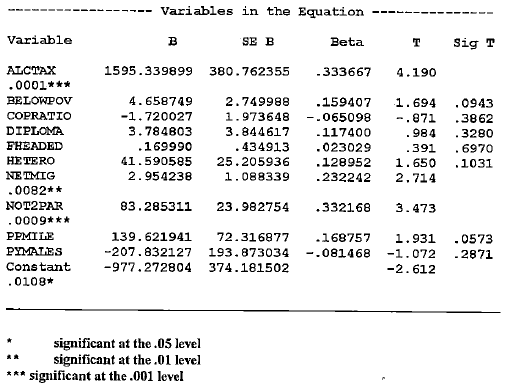

Minnesota Crime: Patterns Over Time and Across COVID
A Capstone Project for the Department of Math & Statistics
William Hamilton Borer Seabloom
Advised by Dr. Tyler George
Cornell College
Feb x 2026
Introduction
In 1998 J. Mark Norman and Donald E. Arwood [1] published a paper titled “A Social Disorganization Theory of County Crime Rates in Minnesota” describing how the many different sociological measures of a society’s organization and control affect the crime rates in a community. These factors were measured across Minnesota counties and included factors such as education, wages, population density, and police presence. Recently, beginning during early 2020 the COVID-19 pandemic changed many factors of our society and disrupted many dimensions of social life. As discussed by Boman and Gallupe in 2020 [3] one of these many impacts was on crime rates, particularly in relation to the more serious violent crimes analyzed in Norman and Arwood’s 1998 study [1]. This raises an important question: Across Minnesota counties, how have the relationships between crime and its determinants changed over time, particularly in response to the COVID-19 pandemic?
The main goal of this research is to build on Norman and Arwood’s 1998 study, by not only redoing the analysis with recent data but also looking at how these relationships have changed due to the COVID-19 pandemic. With crime and its prevention being such a large part of our world, and COVID changing many key parts of our society, it is important to reevaluate how typical sociological factors believed to relate to crime could have shifted during the COVID-19 pandemic. The state of these relationships today is also important in the future prediction/prevention of crime particularly for regulations on a county or state level.
To investigate this question, the study will compare crime counts from the FBI’s Crime Data Explorer with demographic and socioeconomic indicators drawn from the U.S. Census five-year county-level estimates. The analysis will include all 87 Minnesota counties and will operationalize crime rates as the number of part I index offenses (homicide, burglary, robbery, aggravated assault, rape, larceny, motor vehicle theft, and arson) per county, normalized by population. This definition of crime aligns with Norman and Arwood’s earlier work [1] while also building on the more serious offenses that Boman and Gallupe (2020) [3] identified as trending upward during the COVID-19 pandemic. Differences in crime rates, averaged across the five-year periods before and after the onset of the pandemic, will be examined to assess whether structural changes occurred. These differences will be evaluated through statistical modeling of both the pre and post-pandemic county-level data, as well as models estimating changes over time.
Literature Review
This project is informed by several key sources: Norman and Arwood (1998) [1], James and Logan (2008) [2], and Boman and Gallupe (2020) [3]. Together, these works provide a foundation for understanding the sociological determinants of crime, the limitations of available data, and the unique disruptions brought about by the COVID-19 pandemic.
Norman and Arwood’s 1998 study analyzed the relationship between crime rates and a variety of sociological measures at the county level in Minnesota. Their findings demonstrated that among a variety of traditional sociological indicators of crime only alcohol consumption proxied by the county’s alcohol tax revenue, net migration in and out of the county, and households missing one or both parents, were significantly related to crime in Minnesota counties at the .05 level.

This work provides the methodological and theoretical foundation for the present project. While their study focused on the sociological context of the late 20th century, this research builds upon their approach by incorporating data up to the 2024 ACS 5 estimates and examining how these relationships may have shifted due to the COVID-19 pandemic.
While this study aims to replicate the factors studied in Norman and Arwood’s original study there are some key differences in the analyses. Comparing the variables used in each study, both crime rates are a 5 year average of part 1 index crimes retrieved from the FBI’s crime reports. To measure household income levels the study includes the median income, percentage of the population below $5000 income, and below the poverty line. Both studies draw from the U.S census’ 5 year ACS estimates. The same is done for the measures of heterogeneity, net migration, households with less than two parents, the percent of the population made up of young males, and the percent of the population with a high school diploma or greater. In the original study, population density is stated to come from the census’ estimates, but due to lack of availability is determined in this study to be the population of the county divided by the area of the county in m2. The final explanatory variable used in their study, revenue from taxes on alcohol sales, comes from the Minnesota Department of Revenue website and is also averaged across 5 year periods. Having mostly the same source data as Norman and Arwood’s [1] original study, a general comparison to their original 1998 study is still possible with the understanding of the potential and real changes in the data’s collection and reporting.
In order to track some of these changes, James and Logan’s 2008 report provides an overview of how the FBI collects and reports crime statistics, detailing the methodologies, limitations, and potential sources of bias within the Uniform Crime Reporting (UCR) database. Their report is particularly important because it highlights challenges such as underreporting, changes in reporting practices, and differences in local enforcement priorities. James and Logan state that underreporting in the FBI crime data is a large problem, with systematic errors produced from the way that the data is collected. This bias stems from the fact that the only crimes the FBI report are ones that the police have reported to them, and police officers are only aware of citizen reported crimes leading to two large sources of underreporting. Changes in reporting practices also affect this data, in particular the arson and rape counts. The way that rape was defined in this data changed in 2013 to remove the requirement of it being ‘forcible’ increasing the counts of this crime around this period as local law enforcement agencies changed their definition.
Furthermore, in any one instance of crimes being committed e.g a break in and homicide, only the homicide will be reported as it is the more severe of the two crimes. This leads to additional underreporting of less ‘severe’ crimes frequently committed in tandem with more ‘severe’ crimes. The one exception to this rule being arson which is counted on top of any crime it is committed with. However, arson counts are only recorded if it can be proven that the fire was willfully set meaning it is difficult to actually prove and then report arson as an offense.
All of these insights are crucial for interpreting the results of this project, as they remind us that observed patterns in county-level crime rates may partly reflect variation in data quality or reporting practices rather than actual changes in criminal activity. By incorporating this perspective, this study can more carefully interpret both the limitations and strengths of using FBI crime statistics in the context of this paper’s results.
Boman and Gallupe’s research examines the effects of the COVID-19 pandemic on crime trends, with particular attention to how crime patterns shifted during periods of widespread social disruption. They found that while many types of crime declined during the pandemic, homicide and other serious violent crimes rose due to young people(primarily males) being put in positions where they were in close proximity to partners or family members and further from their friends. This change in social structures led to less time spent with friends in the situations where the smaller crimes such as vandalism are often committed. They also hypothesized that the higher counts of more severe crimes such as homicide and aggravated assault were the result of these potential minor offenders being moved into a situation where they have a much greater chance of committing a violent crime against their partners or family members due to a lack of normal outlets. Their findings suggest that structural shocks, such as a global pandemic, can have separate effects on different categories of crime. This study directly informs the paper, as it investigates whether similar shifts occurred in Minnesota counties, particularly in the increased prevalence of violent crime relative to overall crime rates as well as a potential shift in the predictability of crime after the pandemic.
Taken together, these works establish the intellectual groundwork for this project. Norman and Arwood demonstrate how sociological indicators can be systematically linked to crime rates at the county level. James and Logan’s 2008 report provides guidance on the interpretation of crime statistics, ensuring that my analysis acknowledges the methodological challenges of working with FBI data. Finally, Boman and Gallupe highlight the COVID-19 pandemic as a significant structural event that reshaped crime in the United States, motivating the inclusion of a temporal comparison between pre and post-pandemic trends in Minnesota. Building on these sources, my study aims to contribute by both replicating and extending prior methods to assess whether longstanding sociological-crime relationships have been altered by the COVID-19 pandemic.
Hypotheses
Consistent with the findings of Norman and Arwood [1], we would expect that prior to the COVID-19 pandemic, county-level crime rates will be positively associated with indicators of social disorganization, particularly higher net migration rates, greater proportions of households missing one or both parents, and higher levels of alcohol consumption proxied by county alcohol tax revenue. In contrast, more traditional socioeconomic indicators such as median household income, educational attainment, and population density are expected to exhibit weak or statistically insignificant relationships with crime in the pre-pandemic period, as is found in earlier work.
The central hypothesis of this study is that COVID represents a structural shift in the relationship between crime and its sociological determinants. Specifically, that the magnitude and significance of these relationships differ between the pre-pandemic and post-pandemic periods across Minnesota counties. From Jake Boman and Owen Gallupe, this study further hypothesizes that post-pandemic crime patterns, particularly violent crime, are more strongly associated with indicators of family structure and demographic composition, such as the proportion of young males and family disruption, reflecting shifts in routine activities and social proximity during periods of social restriction
Acknowledging the limitations of crime data highlighted by Nathan James and Wayne Logan as well as acknowledged in Norman and Arwood’s study, this study hypothesizes that observed changes in crime rates will vary across offense types and counties in ways that reflect not only true changes in criminal behavior but also differences in reporting practices and data quality. As a result, changes in the modeled relationships between crime and its determinants should be interpreted as the combination of social disruption and institutional variation rather than as being due to criminal activity alone.
Data Description
The data being used in this study consists of two main parts, FBI crime and officer reports, as well as U.S Census Bureau county level ACS 5 year estimates. A collection of other sources were used to supplement and summarize these main sources as well. All of the data and code for this project is publicly available in this Github repository to document the process of this research. Any graphs, tables, and results discussed in this paper can be replicated by following the steps detailed in the repository.
To start, the FBI’s counts of crimes and officers were scraped from their website at a monthly level across all police agencies in Minnesota. As discussed in the literature review, James, Nathan, and Logan Rishard [2]highlight the intricacies to be aware of when using it to draw real world conclusions. Next, using the data from the National Law Enforcement Telecommunication Systems Originating Agency Identifier (NLETS ORI) directory [4] the local police agency data was mapped onto counties. As this data is a scanned PDF document Optical Character Recognition (OCR) was used to convert the data into machine readable text. This process does have some flaws due to the poor quality of the scan and a best effort was made to correct the minimal problems introduced into the data through this process. Additionally, as can be seen in the NLETS ORI directory some police agencies that operate federally or across the whole state cannot be tracked by county and are therefore left out of the crime counts.
Above, a brief look at the monthly/yearly plot of homicides over time shows the issues in the data which are present across all of the FBI’s monthly crime data. The most obvious of these are the December peaks as many police departments report the whole year of crime in December. This lasted from 1998 to 2013 when the FBI again changed how it receives and collects records. James and Logan’s 2008 report [2] details many of the previous shifts in crime data collection and reporting as well. However, grouping the crime data into years removes the month to month reporting problems. It will allow for more direct comparison to the Census estimates.
Alcohol sales tax information was retrieved from the Minnesota Department of Revenue’s website. While this data is lacking some documentation, a general overview of collection and reporting is available at the Minnesota Department of Revenue’s website [6]. The two main inaccuracies cited are that as the gross sales data is not used in calculating taxes it is under less scrutiny than other data and accuracy cannot be guaranteed, and that there are potential errors in location reporting for business with more than one location. For the first issue, this study is using the taxes collected on liquor sales which are closely examined for accuracy, additionally while any incorrect location reporting could affect the results directly it is stated to be only a negligible number of businesses. Using the liquor gross receipts tax (at 2.5%) information provided from the years 2015-2019 a pre COVID 5 year average was obtained. The Minnesota Department of Revenue’s data for 2024, however, had not yet been released so a value for 2024 was obtained by averaging the slopes between the 2010-2019 and 2022-2023 years where the trend appears fairly continuous and then adding this to the 2023 value. This approach is more appropriate than other methods of imputation given the clear and continuous trend in the data and another more standard method would be heavily impacted by the COVID outliers as can be seen below.

With this data now organized and graphed above, the clear positive trend in the revenue from alcohol sales taxes can now be seen. The most notable feature of this plot being the massive dip in 2020 and recovery to the trend in 2021. These trends differ from the common narrative seen in studies such as the 2024 National Survey on Drug Use and Health [8] and the Minnesota Department of Health [9]. These reports suggest that alcohol use by adults and minors has decreased or stayed the same in the past years and had a slight uptick during COVID. This goes almost opposite to the revenue from taxes on alcohol collected by the state which seems counterintuitive and could suggest that Norman and Arwood’s use of alcohol taxes as a proxy for drinking rates is a flawed measure.
County level 5 year estimates (ACS5) for the demographic variables of interest during the years of 2015-2019 and 2020-2024 were then obtained from the U.S Census Bureau through the tidycensus package. These estimates have their own problems such as sampling and response bias [5]. The main problems from this census data are the fact that data on every county is only available in 5 year average estimates and that these numbers are estimates based on a sample of the population. However, the 5 year averaging is not a problem in our case as we want to examine structural changes resulting from the COVID-19 pandemic and an average across 5 years will be able to represent that. The sampling and response biases, generated from who is sampled and who chooses to respond to a poll, will have to be addressed in the final interpretation of the results as a potential source of bias.
The dependent variable of interest, crime rate, is calculated by summing a 5 year average of all part 1 index crimes collected from the FBI and dividing it by the total population estimate from the census. The available demographic variables (officers per 1000 people, median household income, the percent of households with less than 5k income, the percent of people with a high school or greater degree, the percent of children missing parents, the percent non white, the percent young males, persons per household, persons per m2, and per capita net migration) used in Norman and Arwood’s 1998 study [1] were then calculated using a variety of census estimates.
The final data being used for modeling contains two rows for each of the 87 Minnesota counties representing the pre and post COVID periods with 5 year average estimates for 2015-2019 and 2020-2024 respectively. The variables used in Norman and Arwood’s 1998 study [1] will be tested in their effects on crime rates before and after to address the question of: how have the relationships between crime and its determinants changed over time, particularly in response to the COVID-19 pandemic?
Research Findings
Using this data, a few graphical representations of crime rates can help to better understand the nature of the data before modeling.

Using ACS 1 year estimates of population, a yearly plot of crime rates and population reveals a consistent downward trend in crime rates per capita, dropping with a steeper slope than the increase in population. This pattern suggests that crime rates have been declining naturally over time. However, consistent with the predictions in the study by Boman, J.H., Gallupe, O, [3] there is a local peak of crime in 2020 and 2021 during the pandemic lockdown. Interestingly, even before the pandemic there was still a sharp uptick in crime rates in 2019 suggesting other factors at play as well. Following this deviation, crime rates decline again by 2023, resuming the pre-pandemic trend. This indicates that the pandemic period represents a temporary disturbance rather than a lasting structural shift in Minnesotan crime trends.

Looking at the general distribution of crime rates post COVID we see a approximately normal distribution after a square root transformation, this transformation will be used through the rest of the modeling process. However the pre COVID distribution remains slightly left skewed but not dramatically. The right tails of both pre and post COVID distributions hold the largest counties suggesting there could be a relationship between population density and crime rates. The shape does not meaningfully change post COVID but there is a clear drop in crime rates able to be seen. This plot demonstrates again the dropping crime rates post COVID as well as a potential relationship between population density and crime.

A spatial analysis of the post COVID five-year averages for crime rates and population reveals distinct geographic patterns and highlights the relationship between population and large cites with crime. Higher crime rates are concentrated within major urban centers, with a noticeable decline in surrounding suburban areas. Outside of the Twin Cities region, other population hubs also exhibit above-average crime rates. One clear outlier is Beltrami County, which can be seen as a clear yellow county in the upper central portion of the crime rate map despite its lack of a high population.
| variable | mean_pre | mean_post | sd_pre | sd_post | p.value |
|---|---|---|---|---|---|
| median_household_income_acs5 | 61656.48276 | 77500.64368 | 11425.78664 | 12977.17976 | 0.00000 |
| pct_non_white | 9.01708 | 13.85626 | 7.57129 | 8.71725 | 0.00013 |
| pct_highschool_or_greater | 91.37000 | 92.51558 | 2.75060 | 2.38527 | 0.00380 |
| crime_rate | 0.01367 | 0.01055 | 0.00808 | 0.00736 | 0.00860 |
| pct_lessthan_5kincome | 4.54495 | 4.08114 | 1.30145 | 1.15803 | 0.01399 |
| per_capita_alc_taxes | 12.86338 | 15.01273 | 5.85486 | 6.70841 | 0.02564 |
| per_capita_migration | 0.06175 | 0.05681 | 0.01718 | 0.01665 | 0.05592 |
| pct_young_males | 3.20551 | 3.36270 | 0.58305 | 0.58480 | 0.07759 |
| pct_children_missing_parents | 32.89281 | 32.57961 | 2.06612 | 2.63064 | 0.38376 |
| officers | 2.79728 | 2.71555 | 1.11009 | 0.65202 | 0.55471 |
| persons_per_household | 2.45877 | 2.45170 | 0.20076 | 0.16975 | 0.80233 |
| persons_per_m2 | 0.00005 | 0.00005 | 0.00016 | 0.00016 | 0.95437 |
An examination of the predictive variables used in [1] indicate no statistically significant changes at the 5% level between the pre and post-COVID periods for the per capita migration, percent young males, percent of children missing parents, officers per 1,000 residents, persons per household, and persons per square meter. However, across the rest of the variables we see relatively larger and more significant changes particularly across crime rates, income, education, heterogeneity, and revenue from alcohol taxes.
| variable | estimate | p.value |
|---|---|---|
| persons_per_m2 | 0.4988668 | 0.0000000 |
| per_capita_migration | 0.4249200 | 0.0000000 |
| pct_non_white | 0.4094770 | 0.0000000 |
| per_capita_alc_taxes | 0.2595998 | 0.0005418 |
| persons_per_household | 0.2517364 | 0.0008057 |
| pct_highschool_or_greater | -0.1907060 | 0.0117145 |
| pct_young_males | 0.1832375 | 0.0155131 |
| pct_lessthan_5kincome | 0.1380964 | 0.0691860 |
| officers | 0.1084093 | 0.1544724 |
| pct_children_missing_parents | 0.0864215 | 0.2568433 |
| median_household_income_acs5 | -0.0067137 | 0.9299388 |
Further, correlation analyses show that many of the variables of interest exhibit reasonably strong and significant correlations with per capita crime. Some of the largest differences seen here between this study and Norman and Arwood’s [1] is the finding of persons per household to be significant while they found no significant correlation, as well as the insignificance of the correlations with median household income and officers per 1000 people. Particularly the persons per household correlation change aligns with Boman and Gallupe’s 2020 study suggesting that the more people quarantined together, the more violence that could occur.

After fitting preliminary models pct_children_missing_parents, pct_young_male, and persons_per_household were removed due to insignificance at a >.5 level. pct_lessthan_5kincome was also removed due to a -.7 correlation with median income and being a faulty measure over time due to the change in value of $5000 over time. Variables with log_ in front of their names also had a natural log function applied to them in order to stabilize their variances. Three new features were also added to the model, reservations as an indicator for whether a county has a reservation in it, top_cities as an indicator for Ramsey, Hennipen, Olmsted, St. Louis, and Stearns counties which contain the 5 largest cities in Minnesota, and a pre and post COVID indicator for if the data is from the 2019(pre) or 2024(post) ACS 5 estimates. This analysis leaves us with these 9 variables to measure per capita crime with.
Across these predictors a potentially significant change in slope can be seen for log_officers, log_per_capita_alc_taxes, pct_highschool_or_greater, per_capita_migration, and the reservation and top cities indicator variables. Due to the plots above, their interactions with the pre and post COVID indicator will also be included in the model below.
| term | estimate | std.error_normal | std.error_robust | p.value |
|---|---|---|---|---|
| (Intercept) | 0.3871037 | 0.042 | 0.050 | 0.000 |
| median_household_income_acs5 | -0.0000014 | 0.000 | 0.000 | 0.000 |
| log_persons_per_m2 | 0.0227124 | 0.002 | 0.003 | 0.000 |
| reservations | 0.0162691 | 0.005 | 0.005 | 0.002 |
| log_per_capita_alc_taxes | 0.0198314 | 0.005 | 0.007 | 0.003 |
| log_pct_non_white | 0.0080331 | 0.004 | 0.004 | 0.038 |
| post_covid | 0.0005769 | 0.006 | 0.005 | 0.911 |
The resulting model reveals multiple noteworthy relationships between county-level crime and the sociological factors outlined in Norman, J. Mark and Arwood, Donald E’s study [1]. In the above model log_officers, top_cities, pct_highschool_or_greater, and all of their interaction terms were removed due to insignificance. The main variables significant at a <.01 level being median household income, persons per m2, the indicator for reservations, and per capita alcohol taxes. The rest of the variables in the model seem to be relatively insignificant at predicting crime rates besides the log of the percent of non white people in a county. Furthermore, almost every interaction term included in the model as well as the post COVID indicator variable remain insignificant at the >.5 level. This result shows a drastic change from Norman and Arwood’s previous findings and also shows that despite the spike in crime rates during COVID these impacts have not had a large impact on how crime relates to the traditional sociological predictors of crime.
| R2 | Adj_R2 | RMSE |
|---|---|---|
| 0.609 | 0.595 | 0.023 |
This model explains 61% of the variance in crime rates and having an RMSE of about half of the standard deviation in crime rates. Heteroskedastic robust errors are used to compensate for some of the variance issues, particularly with medium level crime rates seen in the residuals vs fits plot.

This model also mostly satisfies it’s normality in the residuals assumption with the majority of residuals matching up with the normal distribution. However on both upper and lower tails there is some drift above and below the theoretical normal distribution which is small enough to not impact the conclusions from this model heavily.

The linear model reveals a limited set of robust predictors of county-level crime, with many traditional sociological variables losing explanatory power once controls and interaction terms are included. As in Norman and Arwood’s previous work, only a small subset of variables remain statistically significant at conventional levels, as well as most interaction terms with the post-COVID indicator not being statistically distinguishable from zero.
The first notable finding concerns median household income, which continues to exhibit a statistically significant negative relationship with crime rates. Although the estimated coefficient is very small in magnitude due to the large values(50k-120k), the relationship is precisely estimated and highly significant, suggesting that counties with higher median incomes experience lower crime rates, holding other factors constant. This finding is consistent with Norman and Arwood’s results, where the related measure of economic deprivation (“percent below poverty”) was positively associated with crime, albeit only marginally significant. Taken together, both studies support the conclusion that economic conditions remain an important determinant of crime, even if the magnitude of the effect isn’t particularly large.
Population density emerges as one of the most stable and substantively meaningful predictors in the model. The log of persons per square meter is positive and highly significant, indicating that denser counties experience higher crime rates. Strengthening the evidence relative to Norman and Arwood’s earlier work, where population density was only marginally significant, and suggests that urban density is a key structural factor in crime.
The indicator for reservations is also statistically significant and positive, indicating higher crime rates in counties containing reservations. This effect persists even after controlling for income, density, and demographic characteristics, and shows no meaningful change in the post-COVID period. This stability suggests that the observed relationship reflects long-standing structural and institutional factors and not pandemic-related disruptions. Another potential reason for this can be seen in the FBI’s handling of crimes committed on tribal land [7]. The majority of crimes used in the operationalization of crime rates are included under the ‘serious’ offenses, which if committed on tribal land, are automatically handled by the FBI bypassing the potential source of under reporting from the police to the FBI.
Several variables that were theoretically important or previously marginally significant show weaker evidence in the full model. The log of the percent of non-white residents is positive but only marginally significant, and its interaction with the post-COVID indicator is not statistically significant. This suggests that racial heterogeneity, while correlated with crime in simpler models, does not independently explain variation once density, income, and other controls are included. As in prior work, this relationship likely reflects broader geographic and socioeconomic clustering rather than a direct causal mechanism.
Similarly, per capita alcohol tax revenue and graduation rates display small coefficients and only marginal or insignificant effects. In particular, the percentage of the population with a high school education or greater is not statistically significant in either the main effect or its post-COVID interaction. This contrasts with earlier interpretations that framed education as a key predictor and suggests that education may primarily act as more of a proxy for urbanization and density rather than exerting a direct influence on crime.
Migration, large city status, and law enforcement presence also show no statistically significant effects in the full model. Both the main effects and interaction terms for migration and police officers per capita are quite insignificant, indicating little evidence that these factors systematically explain cross-county crime variation once other controls are included. The findings for police presences aligns closely with Norman and Arwood’s findings, with little predictive power being found. However, the lack of significance found in the migration variable represents a shift from their original work. Migration in Norman and Arwood’s [1] study was one of three key findings with a positive, meaningful, and significant impact on crimes. This shift could be due to changes in migration and crime or the inclusion of further control variables such as large cities and reservations.
Finally, the post-COVID indicator itself is negative but highly statistically insignificant, suggesting that once demographic and economic factors are accounted for, there is no clear evidence of a structural shift in the relationship between crime and its traditional predictors following the pandemic even if previous plots has shown some evidence of its effects. The insignificance of nearly all interaction terms reinforces this conclusion, indicating that COVID-19 did not structurally alter how socioeconomic characteristics relate to crime across counties. This interpretation is again supported by structural break tests below, which fail to detect meaningful parameter shifts over time at again highly insignificant levels.
M-fluctuation test
data: total_model
f(efp) = 0.93247, p-value = 0.9507
OLS-based CUSUM test
data: cumsum_process
S0 = 0.51432, p-value = 0.954 Running a LASSO regression provides an additional perspective on the relative importance of the full set of potential explanatory variables. Unlike the previous regressions, which rely on statistical significance conditional on a specified model, the LASSO penalizes coefficient size and shrinks less informative variables exactly to zero. As a result, variables that remain in the model and have estimated coefficients can be interpreted as those with the strongest predictive relationships with crime rates in a high-dimensional setting. Additionally as the LASSO model relies on normalized predictor values all of the magnitudes of the coefficients can be directly compared and interpreted as variable importance.
| s0 | |
|---|---|
| (Intercept) | 0.326461043027477 |
| per_capita_migration | 0.275923506927123 |
| log_persons_per_m2 | 0.0193456564563699 |
| log_per_capita_alc_taxes | 0.0121412797567265 |
| log_pct_non_white | 0.00750660928790543 |
| reservations | 0.00738576786078827 |
| log_officers | 0.00319781494538929 |
| pct_children_missing_parents | 2.05258095766972e-05 |
| area_m2 | 3.69919867822241e-12 |
| median_household_income_acs5 | -9.79055639298465e-07 |
| pct_highschool_or_greater | -0.000157991223730068 |
| post_covid | -0.00110267749617027 |
| officers | . |
| per_capita_alc_taxes | . |
| male_15_19_acs5 | . |
| male_20_24_acs5 | . |
| total_population_acs5 | . |
| white_population_acs5 | . |
| children_total_acs5 | . |
| children_w_mother_only_acs5 | . |
| children_w_father_only_acs5 | . |
| children_no_parents_acs5 | . |
| edu_total_25plus_acs5 | . |
| edu_hs_grad_acs5 | . |
| edu_some_college_lt1yr_acs5 | . |
| edu_some_college_gt1yr_acs5 | . |
| edu_assoc_degree_acs5 | . |
| edu_bachelors_acs5 | . |
| edu_masters_acs5 | . |
| edu_professional_degree_acs5 | . |
| edu_doctorate_acs5 | . |
| households_total_acs5 | . |
| households_income_lt5k_acs5 | . |
| pct_lessthan_5kincome | . |
| top_cities | . |
| pct_non_white | . |
| pct_young_males | . |
| persons_per_household | . |
| persons_per_m2 | . |
| stayed_same_house_acs5 | . |
| from_same_county_acs5 | . |
| from_diff_county_same_state_acs5 | . |
| from_diff_state_acs5 | . |
| from_abroad_acs5 | . |
The variables selected by the LASSO remain closely aligned with the factors identified as meaningful in earlier models. Population density, per capita migration, alcohol tax revenue, racial composition, reservation status, and urban indicators all retain non-zero coefficients, suggesting that these variables contain the most information for explaining variation in county-level crime. Median household income is retained with a small negative coefficient, consistent with prior models, although its magnitude is substantially reduced due to penalization. The post-COVID indicator is also retained but with a very small coefficient, reinforcing earlier findings that the pandemic period itself does not fundamentally alter the relationship between crime and its predictors.
In contrast, many demographic, educational, and household structure variables are shrunk entirely to zero. This indicates that, once the more predominant economic and spatial variables are accounted for the LASSO model finds little gain in predictive power by including these variables. Rather than suggesting that these are not at all related to crime this demonstrates that the variables used in previous models are the main factors important in determining county-level crime.
| Metric | Value |
|---|---|
| Best Lambda | 0.0012018 |
| R-squared | 0.6650649 |
| Adjusted R-squared | 0.6423224 |
| RMSE | 0.0209358 |
Additionally we see only a small improvement across these model performance metrics when using the LASSO model. Furthermore, the very small value selected for the best lambda shows that the OLS approach we were using previously was a good choice for modeling the data. Taken together the results from the LASSO model shows that the previous variables chosen and models used were valid estimators for Minnesota county level crime and its relationship with its traditional sociological predictors.
Fitting a model using the difference between pre and post COVID to see if any of the changes in explanatory variables are associated with a change in crime rates. Using this approach, the variables found to have a statistically significant relationship on the change in crime rates is the population density measured in m2. The negative coefficient suggests that counties experiencing increases in population density over this period tended to see relative declines in crime rates, while counties with decreasing density experienced relative increases. No other changes in variables were found to be statistically significant predictors of changes in crime rates, indicating that much of the observed variation in crime across counties during this period is not explained by concurrent changes in these factors.
| term | estimate | std.error | p.value |
|---|---|---|---|
| Difference Model | |||
| log_persons_per_m2_diff | -0.1397450 | 0.065 | 0.034 |
| (Intercept) | -0.0207198 | 0.010 | 0.047 |
| log_pct_non_white_diff | 0.0086527 | 0.007 | 0.221 |
| pct_lessthan_5kincome_diff | -0.0020895 | 0.002 | 0.246 |
| per_capita_migration_diff | -0.0914043 | 0.132 | 0.492 |
| pct_highschool_or_greater_diff | -0.0010711 | 0.002 | 0.540 |
| median_household_income_acs5_diff | 0.0000002 | 0.000 | 0.652 |
| log_officers_diff | -0.0033182 | 0.012 | 0.788 |
| log_per_capita_alc_taxes_diff | 0.0022441 | 0.027 | 0.935 |
Examining the metrics of this differenced model as well as a LASSO regression model we see a similar story. The extremely low R2 shows again that none of the considered factors are explaining much of the actual variance in changes of crime rates before and after COVID.
| R2 | Adj_R2 | RMSE |
|---|---|---|
| 0.103 | 0.011 | 0.015 |
The LASSO model also only selects the population density measure, again with a negative coefficient showing it as the only meaningful predictor among these sociological factors for explaining the changes in crime rates over COVID.
| s0 | |
|---|---|
| (Intercept) | -0.0144860733357076 |
| log_officers_diff | . |
| median_household_income_acs5_diff | . |
| pct_lessthan_5kincome_diff | . |
| pct_highschool_or_greater_diff | . |
| log_pct_non_white_diff | . |
| log_persons_per_m2_diff | . |
| log_per_capita_alc_taxes_diff | . |
| per_capita_migration_diff | . |
Overall, the findings from modeling the differences in crime rates suggest that while crime rates fluctuated during the COVID-19 pandemic, the traditional sociological determinants of crime fail to explain these changes.
Conclusions
This study has revisited and extended the county-level framework of Norman and Arwood to ask whether COVID changed the relationships between county sociological characteristics and part I crime in Minnesota. This study has been done using five-year ACS averages (2015–2019 vs. 2020–2024) and aggregated crime counts from the FBI. From this data some key takeaways have become clear.
Firstly, median household income is robustly and negatively associated with county crime rates: wealthier counties have lower crime, holding other controls constant. Population density is also a stable, positive predictor of higher crime. These results stem from OLS regression with robust standard errors, as well as LASSO penalization and together account for a large proportion of cross-county variations in crime rates.
Secondly, the post-COVID indicator and it’s interaction terms are statistically indistinguishable from zero, and structural-break tests fail to detect a wholesale change in parameter relationships across the two periods. Although there was a short-term rise in serious violent offenses around 2019–2021, the pandemic did not produce a clear structural change in how the main sociological predictors relate to county crime.
Education, racial composition, officers per capita, migration, and alcohol-tax revenue show at best weak or conditional relationships once income, density, urban indicators, and reservation status are included. The LASSO model highlights the same small set of predictors (density, migration, alcohol revenue, racial composition, reservation and urban indicators, and income) as carrying most predictive information. When modeling changes (post minus pre) in county crime, almost none of the differenced sociological variables explain the variation—population-density change is the lone consistent predictor, with a negative coefficient (counties that experienced increases in density over the interval tended to see relative declines in crime). This suggests that the pandemic’s fluctuations in crime were not straightforwardly driven by concurrent changes in the ACS variables we could observe.
These findings imply that there is resilience in the structural predictors of county crime, economic standing and urban density remain centrally related to crime. However, this data contains many caveats that must be noted when interpreting these results.
Limitations and Future Work
These crime counts come from the Federal Bureau of Investigation (FBI) and inherit known reporting limitations (underreporting, changes in definitions and agency reporting practices, variation across local agencies). For one, jurisdictional and tribal-land reporting differences can affect counts for reservation counties (the FBI’s handling of serious offenses on tribal lands differs from municipal reporting), which complicates direct comparison across counties.
Furthermore, many of the sociological predictors are five-year ACS averages reported by the U.S. Census Bureau (due to it being the most granular level at which every Minnesota county is reported); these smooth short-term dynamics and carry sampling/response errors as well as being estimates rather than true values.
For future work I recommend a variety of continuations namely: spatial econometric approaches that explicitly model correlations between neighboring counties and use yearly (not five-year averaged) data where available; analyses at finer geographic units as crime is not ever happening on county levels; incorporation of new indicators (housing instability, unemployment, and mobility among others) as well as administrative data about police reporting practices; and (d) careful treatment of tribal jurisdiction issues to better understand the reservation result.
Final Summary
The pandemic produced a noticeable, short-lived rise in some serious offenses, but it did not fundamentally reshape the cross-county relationships between serious crime and a county’s socioeconomic and spatial characteristics. Income inequality and urban density remain the dominant, stable predictors of county level crime in Minnesota; and many other commonly discussed sociological measures explain little additional cross-county variation once these structural factors are accounted for.
Citations
[1] Norman, J. Mark & Arwood, Donald E. (1998). A Social Disorganization Theory of County Crime Rates in Minnesota. Great Plains Sociologist, 11(2), Article 2.
https://openprairie.sdstate.edu/greatplainssociologist/vol11/iss2/2
[2] James, Nathan & Logan, Rishard. (2008). How Crime in the United States Is Measured. Congressional Research Service, Library of Congress.
https://apps.dtic.mil/sti/html/tr/ADA476144/
[3] Boman, J. H., & Gallupe, O. (2020). Has COVID-19 Changed Crime? Crime Rates in the United States during the Pandemic. American Journal of Criminal Justice, 45, 537–545.
https://doi.org/10.1007/s12103-020-09551-3
[4] National Law Enforcement Telecommunications System (NLETS). (1981). ORI (Originating Agency Identifier) Directory. U.S. Department of Justice. Grant No. 75-SS-99-6018.
[5] U.S. Census Bureau. (2025, August 19). Comparing ACS Data.
https://www.census.gov/programs-surveys/acs/guidance/comparing-acs-data.html
[6] Minnesota Department of Revenue Sales and Use Tax Statistics for Liquor Sales and 2.5% Tax by County
https://www.revenue.state.mn.us/sales-and-use-tax-statistics-and-annual-reports
[7] Law Enforcement on Tribal Land
https://www.fbi.gov/investigate/violent-crime/indian-country-crime
[8] Substance Abuse and Mental Health Services Administration. (2025).
Key substance use and mental health indicators in the United States:
Results from the 2024 National Survey on Drug Use and Health
(HHS Publication No.PEP25-07-007, NSDUH Series H-60).
Center for Behavioral Health Statistics and Quality,
Substance Abuse and Mental Health Services Administration.
https://www.samhsa.gov/data/sites/default/files/reports/rpt56287/2024-nsduh-annual-national-report.pdf
[9] Minnesota Department of Health: Alcohol Use Among Youth in Minnesota Report
https://www.health.state.mn.us/communities/alcohol/documents/youthalcoholuse.pdf